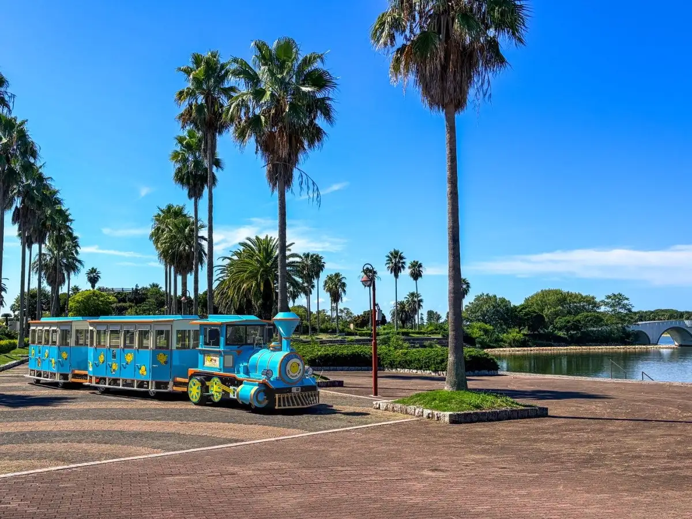
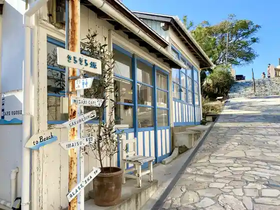
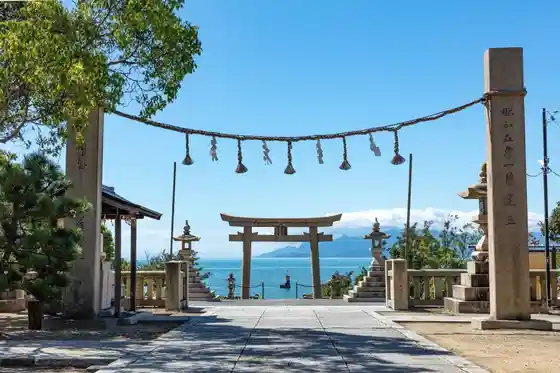

Ako
Ako · Hyogo
Ako
Highlighted on the Hyogo map.

Stay
Kamenoi Hotel Ako
Seaside onsen resort at Misaki with infinity open-air baths facing the Seto Inland Sea
Ako Onsen Donkairo
Quiet Misaki inn with Ako Onsen baths and Seto seafood cuisine
Taioukan
Ako Onsen ryokan with rooms overlooking the Inland Sea and seasonal fish kaiseki
Dining
Kakuisou Ako
Kappo ryokan restaurant with live seawater tanks for Seto Inland Sea catch
Kamenoi Hotel Ako Dining
Hotel restaurant pairing Seto oysters, Ako salt, and sea views
Onsen
Ako Onsen
Coastal hot-spring area at Misaki known for highly mineralized restorative baths
Sights
Ako Seaside Park
Waterfront park with lawns, playgrounds, and open Seto Inland Sea views
Kirakira Slope
Scenic slope and viewpoint listed on Hyogo tourism for Ako walks

Iwadzuhime Shrine
Local shrine grounds photographed for Hyogo tourism coverage of Ako

Momoi Museum Unkuyaki
Museum of Unkuyaki ceramics associated with Ako craft traditions